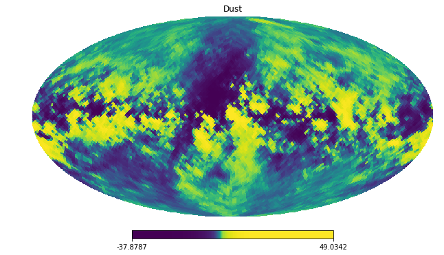
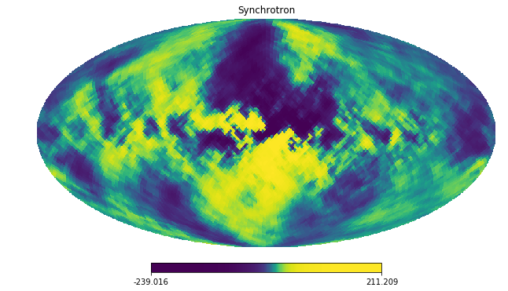

Example of simulated component separation¶
Simulate a sky¶
We need a sky to clean. DustBuster provides a handy way of generating
simulated sky obsersvation that exploit the pysm
In [1]:
%load_ext autoreload
%autoreload 2
from fgbuster.pysm_helpers import get_instrument, get_sky
import healpy as hp
import numpy as np
import matplotlib.pyplot as plt
%matplotlib inline
nside = 32
sky = get_sky(nside, 'c1d0s0')
instrument = get_instrument(nside, 'litebird')
freq_maps = instrument.observe(sky, write_outputs=False)[0]
freq_maps = freq_maps[:, 1:] # Select polarization
nu (GHz) | sigma_I (uK_CMB amin) | sigma_P (uK_CMB amin) | FWHM (arcmin)
0040.00 | 25.60 | 36.10 | 00.00
0050.00 | 13.90 | 19.60 | 00.00
0060.00 | 14.33 | 20.20 | 00.00
0068.40 | 08.01 | 11.30 | 00.00
0078.00 | 07.30 | 10.30 | 00.00
0088.50 | 05.96 | 08.40 | 00.00
0100.00 | 04.96 | 07.00 | 00.00
0118.90 | 04.11 | 05.80 | 00.00
0140.00 | 03.33 | 04.70 | 00.00
0166.00 | 04.96 | 07.00 | 00.00
0195.00 | 04.11 | 05.80 | 00.00
0234.90 | 05.67 | 08.00 | 00.00
0280.00 | 06.45 | 09.10 | 00.00
0337.40 | 08.09 | 11.40 | 00.00
0402.10 | 13.90 | 19.60 | 00.00
Instrument attribute 'pixel_indices' not set.
Define what you fit for¶
Notice that this choice is independent of what the actual sky contains. Here we fit for CMB, dust and synchrotron. The spectral index of dust and synchrotron are free parameters.
In [2]:
from fgbuster.component_model import CMB, Dust, Synchrotron
components = [CMB(), Dust(150.), Synchrotron(20.)]
Component separation¶
The tools in DustBuster allow for very flexible and diverse component separation approaches. However, we also provide a set of predefined function that perform component separation out of the box. They suit most of the case-of-use.
In [3]:
from fgbuster.separation_recipies import basic_comp_sep
res = basic_comp_sep(components, instrument, freq_maps)
Explore the results¶
Inspect both the non-linear parameters
In [4]:
from fgbuster.visualization import corner_norm
print res.params
corner_norm(res.x, res.Sigma, labels=res.params)
['Dust.beta_d', 'Dust.temp', 'Synchrotron.beta_pl']

and the component maps
In [5]:
print res.s.shape
hp.mollview(res.s[0,1], title='CMB')
hp.mollview(res.s[1,1], title='Dust', norm='hist')
hp.mollview(res.s[2,1], title='Synchrotron', norm='hist')
(3, 2, 12288)
/Users/dpoletti/Library/Python/2.7/lib/python/site-packages/healpy/projaxes.py:859: MaskedArrayFutureWarning: setting an item on a masked array which has a shared mask will not copy the mask and also change the original mask array in the future.
Check the NumPy 1.11 release notes for more information.
result[np.isinf(val.data)] = -np.inf


